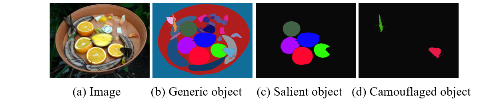
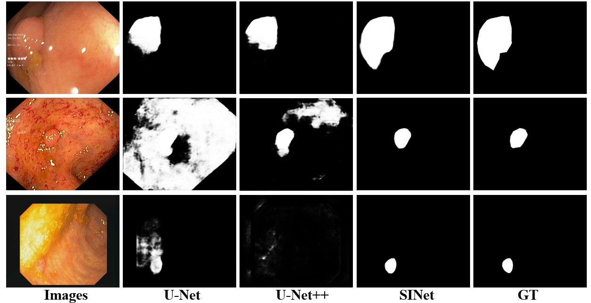
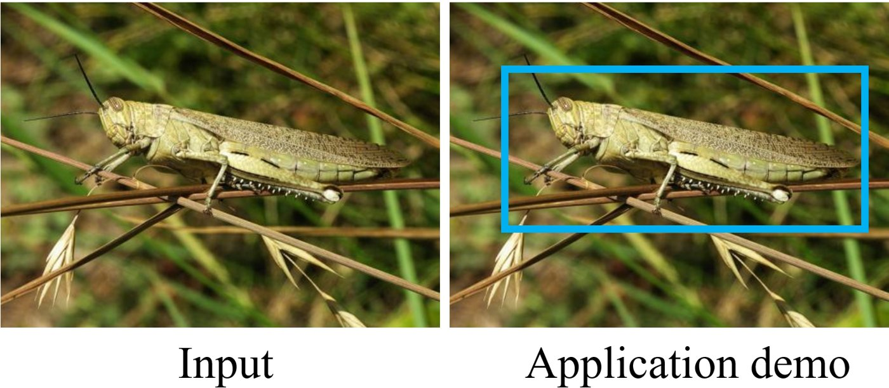
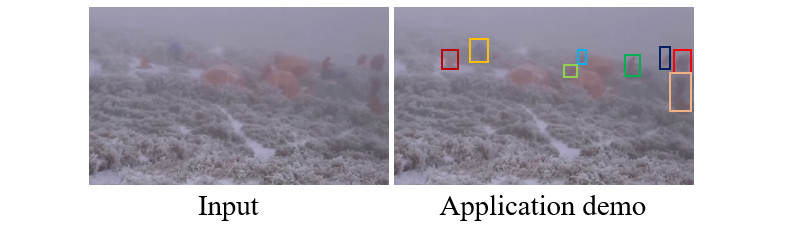
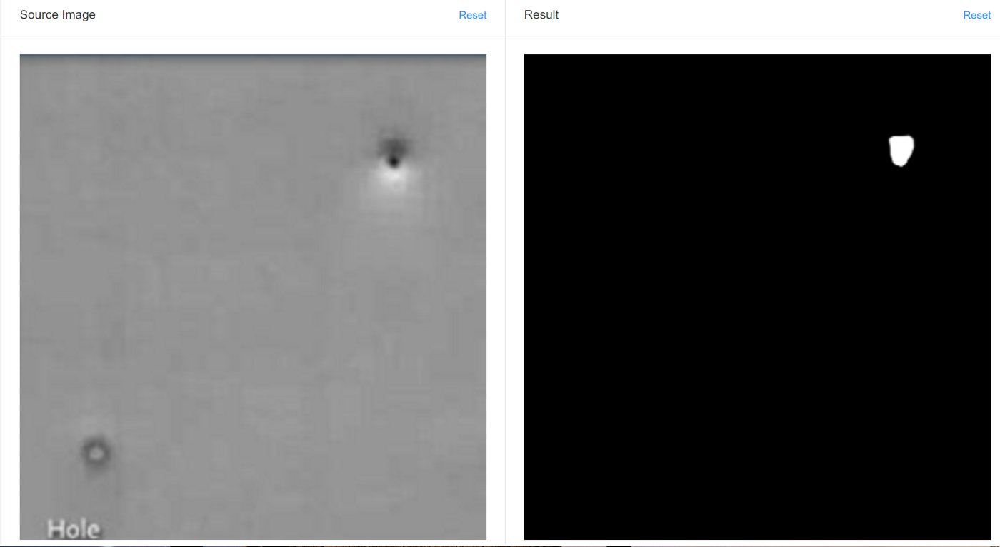
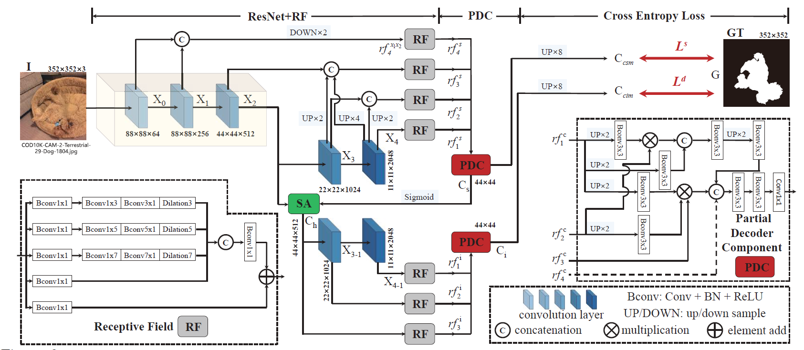
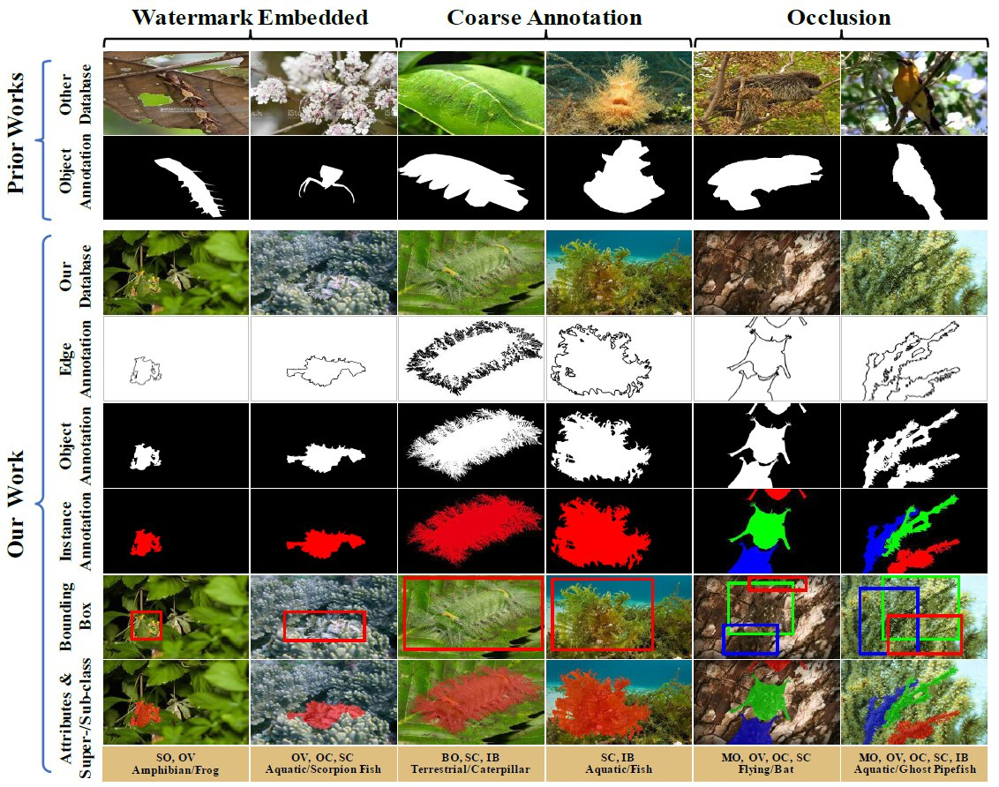
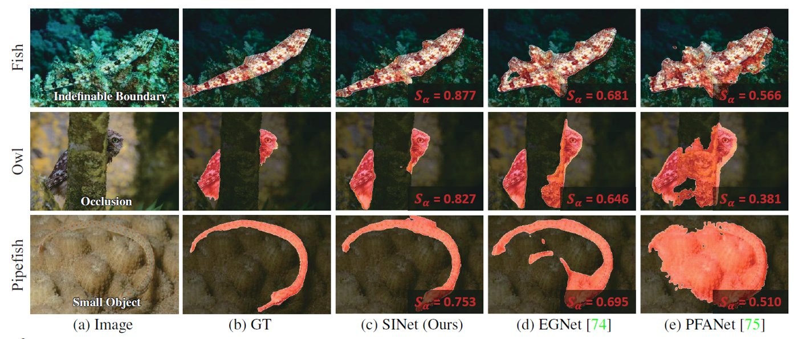

1.Introduction
1.1 Motivation
Most detection and segmentation systems are built for objects that stand out: a person on a road, a car against the sky. Camouflaged objects are the opposite. A stick insect on a branch, a flatfish on sand or a snow leopard on rock has evolved so that its colour, texture and even its outline match the background. Humans often need several seconds, and sometimes motion, to notice them.
Camouflaged Object Detection (COD) asks a network to produce a pixel-wise map of such objects. This is harder than Salient Object Detection (SOD), because the cues SOD relies on (strong contrast, distinct colour, clear boundaries) are deliberately suppressed. The figure below shows the same image under different tasks.

Why this belongs in Video Analytics. In a video, camouflage is often “broken” only over time: an animal becomes visible when it moves, and a still detector may flicker between frames. Understanding a strong single-frame COD model, and then studying how it behaves frame-to-frame, connects directly to the course pipeline image → frame → sequence → temporal information → motion → object → track.
1.2 Applications
Medical imaging
Polyp and lung-infection segmentation, where lesions have low contrast with surrounding tissue.Agriculture
Locust and pest detection on crops to prevent invasions.Search & rescue / surveillance
Finding people or objects hidden in cluttered terrain from drones and cameras.Wildlife monitoring
Rare-species discovery and camera-trap analysis.Industrial inspection
Surface-defect detection on textured materials.Robotics perception
Robust segmentation for autonomous systems operating in natural, low-contrast scenes.



1.3 Problem Statement
Video extension: given a sequence of frames \(\{I_t\}_{t=1}^{T}\), produce temporally stable maps \(\{S_t\}\), binary masks \(\{M_t\}\) and a centroid track \(\{(x_c,y_c)_t\}\) of the camouflaged object.
1.4 Contributions
The base work [1] contributes the COD10K dataset, a full benchmark, and the SINet baseline. In this course project, our group’s contributions are:
- Workflow extraction and explanation. We reconstructed SINet’s complete data flow from the repository README diagrams and the source code, including tensor shapes at every stage, and wrote out the RF, PDC and Search-Attention operations as equations.
- Code-vs-paper verification. We found and documented three places where the released code differs from the paper text (Section 5.5): the Gaussian kernel parameters, the missing ReLU in
BasicConv2d, and the corrected index range of the PDC equation. - Modernised inference. The released
MyTest.pydepends onscipy.misc.imsave, which was removed from SciPy. We wrotetest_images.py, which runs on current PyTorch, and computes MAE, IoU and \(F_\beta\) and saves result and failure-case panels. - Video extension. We wrote
video_inference.py, which applies SINet frame-by-frame, adds exponential-moving-average temporal smoothing, extracts the largest connected component and logs a bounding box and centroid track per frame. - Reproducible package. A one-click Colab notebook, this report page, a presentation and a setup guide.
2.Brief Literature Review
2.1 Generic and salient object detection
Generic detectors and segmenters such as FPN [4], Mask R-CNN [5] and PSPNet [6] learn to localise everyday object categories. Salient Object Detection (SOD) methods such as PiCANet [7], BASNet [8], CPD [9] and EGNet [10] instead find the region that attracts human attention first. Both families assume the target is visually distinct from its background. Camouflage violates exactly that assumption, so these models are used as baselines in [1] and perform noticeably worse on COD (Table 1).
2.2 Camouflage in biology and early vision
Biologists (Thayer, Cott; survey by Stevens and Merilaita [11]) describe camouflage strategies such as background matching and disruptive colouration. Early computer-vision approaches used hand-crafted cues: texture, colour statistics, 3D convexity and motion. They worked only in narrow, controlled settings.
2.3 COD datasets and deep methods
CHAMELEON [12] (76 images) and CAMO [13] (2,500 images, with the ANet two-stream baseline) were the first COD datasets. They were small and had coarse annotations. Fan et al. [1] introduced COD10K (10,000 images, dense hierarchical annotations) and SINet, which is inspired by how a predator first searches for prey and then identifies it.
2.4 Building blocks used by SINet
- ResNet-50 [14]: the backbone feature extractor.
- Receptive Field Block (RFB) [15]: multi-branch dilated convolutions that mimic the receptive fields of the human visual system.
- Cascaded Partial Decoder (CPD) [9]: aggregates only higher-level features for speed, and introduces holistic attention, which SINet reuses as Search Attention.
2.5 Later work
SINet-V2 [2] (TPAMI 2022) refines the same search-and-identify idea with texture-enhanced modules and group-reversal attention. MoCA [3] extends COD to video, using motion to reveal camouflaged animals. Our video extension is a lightweight step in that direction.
3.Methodology
SINet has two stages that copy a predator’s behaviour: a Search Module (SM) roughly locates candidate regions, and an Identification Module (IM) precisely segments the object. A Search Attention (SA) block connects them. Every multi-scale feature passes through a Receptive Field (RF) block, and each stage decodes its features with a Partial Decoder Component (PDC).
3.1 Overall Workflow

From that diagram and from Src/SINet.py, we extracted the following simplified workflow. Shapes assume a 352×352 input, with \(C{=}32\) channels after each RF block.
SINet.py. Blue: backbone (ResNet-50, weights duplicated for the two branches via layer3_1/layer3_2, layer4_1/layer4_2). Grey: RF blocks. Red: partial decoders. Green: search attention. Orange: our video extension.Step-by-step data flow
- Input. Resize to 352×352, normalise with ImageNet mean/std.
- Shared low/mid features. ResNet-50 conv1 → maxpool → layer1 → layer2 gives \(X_0, X_1, X_2\).
- Search branch. layer3_1 and layer4_1 give \(X_3, X_4\). Dense concatenation of upsampled deeper features gives four multi-scale inputs, each passed through an RF block.
- Coarse map. \(PD_s\) fuses \(rf^s_1..rf^s_4\) into the coarse map \(C_s\) (44×44).
- Search attention. \(\sigma(C_s)\) is blurred with a Gaussian, min-max normalised and max-ed with itself, then multiplied with \(X_2\) to give \(C_h\).
- Identification branch. A second copy of layer3/layer4 processes \(C_h\). Three RF outputs go into \(PD_i\) and produce the refined map \(C_i\).
- Supervision. Both maps are upsampled ×8 to 352×352 and trained with BCE against the same ground truth \(G\).
3.2 Feature Extraction (ResNet-50)
| Symbol | Layer | Size (H×W×C) | Stride | Role |
|---|---|---|---|---|
| \(X_0\) | conv1 + BN + ReLU + maxpool | 88×88×64 | 4 | edges, colour, fine texture |
| \(X_1\) | layer1 | 88×88×256 | 4 | low-level texture |
| \(X_2\) | layer2 | 44×44×512 | 8 | mid-level parts, shared by both stages |
| \(X_3\) / \(X_3'\) | layer3_1 / layer3_2 | 22×22×1024 | 16 | object-level semantics |
| \(X_4\) / \(X_4'\) | layer4_1 / layer4_2 | 11×11×2048 | 32 | global context |
Both copies of layer3/layer4 are initialised from the same ImageNet-pretrained ResNet-50 (initialize_weights) but are trained independently.
3.3 Receptive Field (RF) Module
Why it is needed. A camouflaged object can be tiny (a pipefish) or large (a leopard), and the cue that gives it away may be local (a texture seam) or global (a body outline). RF gives each scale several receptive-field sizes at once, without the cost of large kernels.
Let \(\mathrm{Bconv}_{k}\) denote convolution with kernel \(k\) followed by batch normalisation, and \(\mathrm{Dil}_{d}\) a 3×3 convolution with dilation \(d\). For an input feature \(x\):
So the branches use kernels 1, 3, 5, 7 with dilations 1, 3, 5, 7. \([\cdot;\cdot]\) is channel concatenation, and the last term is a residual shortcut. The 1×k then k×1 factorisation keeps the parameter count low. A 3×3 kernel with dilation \(d\) covers a \((2d{+}1)\times(2d{+}1)\) window, so branch 3 sees 15×15 at the cost of 9 weights.
3.4 Search Module and Partial Decoder Component (PDC)
Dense multi-scale inputs. Before the RF blocks, each level is concatenated with all deeper levels, upsampled to its resolution:
The coarse camouflage map from the search stage is (paper Eq. 1):
Inside the PDC. The paper writes the feature update as Eq. (4). The authors later corrected the index range in the README (2020/10/22 note), so we write it in the corrected form, where level 1 is the deepest:
Here \(\otimes\) is element-wise multiplication. Reading PDC_SM.forward, with \(r_1\) the deepest (11×11) and \(r_3\) at 44×44, the concrete computation is:
3.5 Search Attention (SA)
Problem. \(C_s\) is coarse. It often catches only the most visible part of the object, such as the head of an owl but not the body behind the branch. SA enlarges the searched region before identification.
Paper form (Eq. 2): \( C_h = f_{\max}\big(g(X_2,\sigma,\lambda),\,C_s\big) \). From SearchAttention.py, the exact operation is:
Here \(\mathcal{G}_{31,4}\) is a 31×31 Gaussian kernel spanning ±4 standard deviations, and \(*\) is 2D convolution with padding 15. The blur spreads attention to the neighbourhood of every detected pixel. Min-max normalisation restores the range [0, 1]. The pixel-wise max guarantees that confident pixels in \(A\) are never weakened, and the product with \(X_2\) suppresses background features before identification.
3.6 Identification Module
This is paper Eq. 3. Because the features are now focused on the searched region, \(C_i\) is sharper and more complete than \(C_s\). At test time only \(C_i\) is used.
3.7 Loss Function and Training
Both maps are upsampled ×8 to the 352×352 ground truth and supervised with binary cross-entropy on logits (BCEWithLogitsLoss):
Supervising \(C_s\) as well (deep supervision) forces the search stage to output a meaningful attention map, rather than letting the gradient reach it only through the identification stage.
Inference. \(\hat C = \mathcal{N}\big(\sigma(\mathrm{resize}_{H\times W}(C_{cim}))\big)\).
3.8 Our Extension: SINet on Video
SINet processes one image at a time. Applied naively to a video, its output can flicker because each frame is predicted independently. Our video_inference.py adds a light temporal layer on top:
The EMA is a first-order IIR low-pass filter over time. Unrolling it gives \(S_t=\sum_{k\ge0}\alpha(1-\alpha)^k C_{t-k}\), so a frame \(k\) steps old has weight \(\alpha(1-\alpha)^k\). With \(\alpha=0.6\), the previous frame contributes 24% and two frames back about 10%. Smaller \(\alpha\) gives a more stable mask but a slower response to motion. For each frame the script writes an overlay (mask + bounding box + centroid), a heat-map video and a CSV row: frame, detected, box, area, centroid, displacement, mean confidence. This turns per-frame detection into an object track, which is the IMAGE → FRAME → SEQUENCE → OBJECT → TRACK chain of the course.
4.Experimental Setup
4.1 Baseline Algorithms
The base work [1] compares SINet with 12 state-of-the-art methods, all retrained on the same data:
| Family | Methods |
|---|---|
| Generic detection / segmentation | FPN, Mask R-CNN, PSPNet, UNet++, MSRCNN, HTC |
| Salient object detection | PiCANet, BASNet, PFANet, CPD, EGNet |
| Camouflage-specific | ANet-SRM |
4.2 Datasets
| Dataset | Images | Train / Test | Notes |
|---|---|---|---|
| COD10K [1] | 10,000 | 6,000 / 4,000 | 5,066 camouflaged, 3,000 background, 1,934 non-camouflaged; 5 super-classes, 69 sub-classes; object-, instance- and edge-level masks, boxes and attributes |
| CAMO [13] | 2,500 | 2,000 / 500 | 8 categories; half camouflaged, half from MS-COCO |
| CHAMELEON [12] | 76 | – / 76 | Test-only, object-level ground truth |
Training setting (iii) of [1] uses CAMO + COD10K (+ extra) training images. The released test package contains COD10K-test, CAMO-test and CHAMELEON.

4.3 Implementation Platform
Original training (authors [1])
Our runs
test_images.py, video_inference.py
Video paramsα = 0.6, τ = 0.54.4 Evaluation Metrics
Let \(C\) be the prediction and \(G\) the ground truth, both of size \(W\times H\).
- Mean Absolute Error (lower is better)
\[ \mathcal{M}=\frac{1}{W H}\sum_{x=1}^{W}\sum_{y=1}^{H}\big|C(x,y)-G(x,y)\big| \]
- Structure-measure \(S_\alpha\) (higher is better). Combines object-aware (\(S_o\)) and region-aware (\(S_r\)) structural similarity: \( S_\alpha=\alpha\,S_o+(1-\alpha)\,S_r,\ \alpha=0.5 \) (as in
StructureMeasure.m). - Enhanced-alignment measure \(E_\phi\) (higher is better). With bias matrices \(\varphi_I = I-\mu_I\):
\[ \xi=\frac{2\,\varphi_G\circ\varphi_C}{\varphi_G\circ\varphi_G+\varphi_C\circ\varphi_C},\qquad E_\phi=\frac{1}{WH}\sum_{x,y}\frac{(1+\xi(x,y))^2}{4} \]This captures pixel-level matching and image-level statistics together; the mean over thresholds is reported.
- Weighted F-measure \(F^w_\beta\) (higher is better).
\[ F^{w}_{\beta}=\frac{(1+\beta^2)\,\mathrm{Precision}^w\cdot \mathrm{Recall}^w}{\beta^2\,\mathrm{Precision}^w+\mathrm{Recall}^w} \]Precision and recall are weighted by pixel location and dependency. The toolbox uses \(\beta=1\) (
original_WFb.m). - Our quick metrics in
test_images.py: MAE, IoU at threshold 0.5, and \(F_\beta\) at threshold 0.5 with \(\beta^2=0.3\). The official \(S_\alpha, E_\phi, F^w_\beta\) are computed with the MATLAB toolbox incode/EvaluationTool/main.m.
5.Results
5.1 Quantitative Results
Table 1. COD10K-test, SINet vs. 12 baselines (numbers from the SINet repository [1]). ↑ higher is better, ↓ lower is better.
| Model | Year | \(S_\alpha\)↑ | \(E_\phi\)↑ | \(F^w_\beta\)↑ | \(\mathcal{M}\)↓ |
|---|---|---|---|---|---|
| FPN | 2017 | 0.697 | 0.691 | 0.411 | 0.075 |
| Mask R-CNN | 2017 | 0.613 | 0.748 | 0.402 | 0.080 |
| PSPNet | 2017 | 0.678 | 0.680 | 0.377 | 0.080 |
| UNet++ | 2018 | 0.623 | 0.672 | 0.350 | 0.086 |
| PiCANet | 2018 | 0.649 | 0.643 | 0.322 | 0.090 |
| MSRCNN | 2019 | 0.641 | 0.706 | 0.419 | 0.073 |
| BASNet | 2019 | 0.634 | 0.678 | 0.365 | 0.105 |
| PFANet | 2019 | 0.636 | 0.618 | 0.286 | 0.128 |
| HTC | 2019 | 0.548 | 0.520 | 0.221 | 0.088 |
| CPD | 2019 | 0.747 | 0.770 | 0.508 | 0.059 |
| EGNet | 2019 | 0.737 | 0.779 | 0.509 | 0.056 |
| SINet | 2020 | 0.771 | 0.806 | 0.551 | 0.051 |
Table 2. SINet on all three test sets. The ◇ row is the authors’ retrained model with Apex mixed precision, 40 epochs (the released weights) [1].
| Model | CHAMELEON | CAMO-Test | COD10K-Test | |||||||||
|---|---|---|---|---|---|---|---|---|---|---|---|---|
| \(S_\alpha\) | \(E_\phi\) | \(F^w_\beta\) | \(\mathcal M\) | \(S_\alpha\) | \(E_\phi\) | \(F^w_\beta\) | \(\mathcal M\) | \(S_\alpha\) | \(E_\phi\) | \(F^w_\beta\) | \(\mathcal M\) | |
| SINet (paper) | 0.869 | 0.891 | 0.740 | 0.044 | 0.751 | 0.771 | 0.606 | 0.100 | 0.771 | 0.806 | 0.551 | 0.051 |
| SINet ◇ (released) | 0.872 | 0.946 | 0.806 | 0.034 | 0.745 | 0.829 | 0.644 | 0.092 | 0.776 | 0.864 | 0.631 | 0.043 |
Per-sub-class \(S_\alpha\) for all 69 COD10K categories is reported in the repository [1] (part 1, part 2).
5.2 Qualitative Results

5.3 Our Reproduction (pretrained SINet, COD10K-test)
This subsection shows our own run of the released SINet_40 weights with test_images.py (Colab notebook, Step 2) on COD10K-test. The table and panels are loaded directly from results/our_metrics.json and results/panel_*.png, so they always match the committed outputs.
results/our_metrics.json is committed (run the Colab notebook, Step 2).5.4 Video Results (our extension)
Each panel shows original frame | temporally smoothed heat-map \(S_t\) | overlay with mask, bounding box and centroid. The plot shows detected area and centroid displacement over time.
5.5 Discussion and Observations
- Two-stage search beats one-shot decoding. The closest baselines, CPD and EGNet, also fuse multi-level features, yet SINet improves \(F^w_\beta\) by about 4 points (0.551 vs. 0.509). The difference is that SINet re-extracts deep features after attention, with separate layer3/layer4 weights, instead of only re-weighting decoder outputs.
- Generic detectors struggle on COD. HTC and Mask R-CNN, both strong on COCO, score lowest in \(S_\alpha\) (0.548, 0.613). Instance proposals depend on objectness cues that camouflage removes.
- CAMO is the hardest set for MAE (0.092–0.100, vs. 0.034–0.051 elsewhere). CAMO objects are larger on average, so each missed region costs more pixels.
- Retraining matters. The released ◇ model improves \(F^w_\beta\) on COD10K from 0.551 to 0.631 with the same architecture, through mixed precision and 40 epochs. Implementation details move results as much as some architectural changes do.
- Code vs. paper (our verification).
- The paper lists the Gaussian in SA as \(\sigma{=}32,\lambda{=}4\). The code builds
_get_kernel(31, 4), a 31×31 kernel spanning ±4σ, so σ ≈ 3.9 px on the 44×44 map. The paper appears to describe the kernel size and the number of standard deviations. - The paper defines Bconv as Conv+BN+ReLU, but
BasicConv2d.forwardapplies only Conv+BN. Itsself.reluis defined and never called. Non-linearity enters only at the end of each RF block and through the multiplications in the PDC. - The PDC product index in Eq. (4) was corrected by the authors after publication. We used the corrected form, which matches the code.
- The paper lists the Gaussian in SA as \(\sigma{=}32,\lambda{=}4\). The code builds
- Video behaviour. Single-frame COD has no notion of motion. Our EMA smoothing reduces frame-to-frame flicker at the cost of a short lag behind fast movement. That trade-off is set by \(\alpha\).
5.6 Failure Cases
Our test script automatically saves the two images with the highest MAE as failure cases (image | ground truth | SINet prediction); they appear below.
- Multiple camouflaged objects: SINet predicts an object-level map without separating instances, and fainter instances are often missed.
- Very small objects: the decoder outputs at 44×44 (stride 8) and is upsampled ×8, so thin parts such as legs, antennae and tails get blurred or lost.
- Background distractors: textures that resemble animals (bark, coral) can create false positives. The baselines in Fig. 7 show this strongly, and SINet is not immune.
- No temporal reasoning: on video, a frame where the animal is perfectly still and matched can be missed entirely, even though neighbouring frames find it. EMA can bridge only short gaps. Motion cues, as in MoCA [3], would be needed for longer ones.
- Single-object tracker assumption: our extension follows the largest component, so it can switch to a different object if two are present.
6.Conclusion
Summary
We studied Camouflaged Object Detection through SINet, which models a predator’s search → identify behaviour with RF blocks for multi-scale receptive fields, partial decoders for efficient multiplicative fusion, and Gaussian search attention that links the two stages. We extracted and explained the full workflow from the repository diagrams and code, verified the equations against the implementation (finding three differences between paper and code), modernised the inference code, and extended SINet to video with temporal EMA smoothing and centroid tracking. On COD10K, SINet outperforms all 12 baselines in every metric. The released model reaches \(S_\alpha\)=0.776 and \(\mathcal M\)=0.043.
Future Work
- Motion-aware COD: add optical flow or frame differencing as a second input, so that movement “breaks” camouflage (the MoCA / video COD direction).
- Learned temporal models: replace the EMA with ConvLSTM or temporal attention over several frames.
- Multi-object tracking: associate several components over time, for example with a Kalman filter and Hungarian matching.
- Instance-level COD and stronger backbones (Res2Net, Transformers), as explored in SINet-V2 [2].
- Edge deployment: a lightweight backbone for real-time robot or drone perception.
7.References
- D.-P. Fan, G.-P. Ji, G. Sun, M.-M. Cheng, J. Shen, L. Shao. “Camouflaged Object Detection.” CVPR, 2020. Code: github.com/DengPingFan/SINet · Paper
- D.-P. Fan, G.-P. Ji, M.-M. Cheng, L. Shao. “Concealed Object Detection.” IEEE TPAMI, 2022 (SINet-V2). GitHub
- H. Lamdouar, C. Yang, W. Xie, A. Zisserman. “Betrayed by Motion: Camouflaged Object Discovery via Motion Segmentation.” ACCV, 2020 (MoCA dataset).
- T.-Y. Lin et al. “Feature Pyramid Networks for Object Detection.” CVPR, 2017.
- K. He, G. Gkioxari, P. Dollár, R. Girshick. “Mask R-CNN.” ICCV, 2017.
- H. Zhao et al. “Pyramid Scene Parsing Network.” CVPR, 2017.
- N. Liu, J. Han, M.-H. Yang. “PiCANet: Learning Pixel-wise Contextual Attention for Saliency Detection.” CVPR, 2018.
- X. Qin et al. “BASNet: Boundary-Aware Salient Object Detection.” CVPR, 2019.
- Z. Wu, L. Su, Q. Huang. “Cascaded Partial Decoder for Fast and Accurate Salient Object Detection.” CVPR, 2019.
- J.-X. Zhao et al. “EGNet: Edge Guidance Network for Salient Object Detection.” ICCV, 2019.
- M. Stevens, S. Merilaita. “Animal Camouflage: Current Issues and New Perspectives.” Phil. Trans. R. Soc. B, 2009.
- P. Skurowski et al. “Animal Camouflage Analysis: CHAMELEON Database.” Unpublished manuscript, 2018.
- T.-N. Le, T. V. Nguyen, Z. Nie, M.-T. Tran, A. Sugimoto. “Anabranch Network for Camouflaged Object Segmentation.” CVIU, 2019 (CAMO).
- K. He, X. Zhang, S. Ren, J. Sun. “Deep Residual Learning for Image Recognition.” CVPR, 2016.
- S. Liu, D. Huang, Y. Wang. “Receptive Field Block Net for Accurate and Fast Object Detection.” ECCV, 2018.
- D.-P. Fan et al. “Structure-measure: A New Way to Evaluate Foreground Maps.” ICCV, 2017; “Enhanced-alignment Measure for Binary Foreground Map Evaluation.” IJCAI, 2018; R. Margolin et al. “How to Evaluate Foreground Maps?” CVPR, 2014.
All figures marked [1] and the original code in code/Src belong to the SINet authors and are reused for academic purposes under the repository’s license. Our additions are test_images.py, video_inference.py, the Colab notebook, the workflow diagram (Fig. 4), and this report.
8.Link to PPT File (on GitHub)
The presentation is in this repository at assets/ppt/SINet_COD_Presentation.pptx.